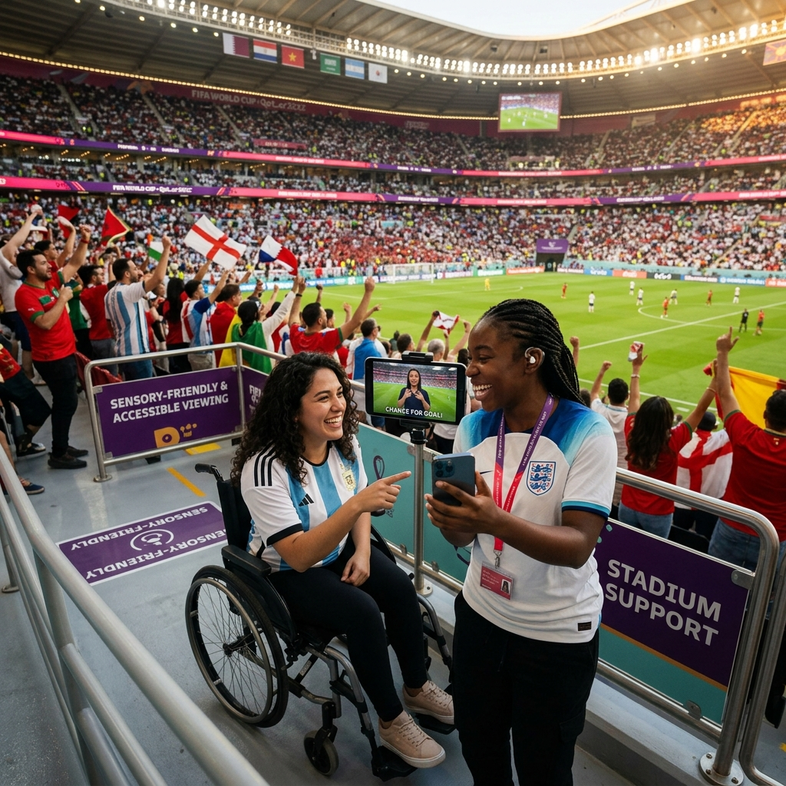

SYNAPSE doesn't hand everyone the same app screen. It reasons about who's asking, what they need, and what the venue looks like right now.
Every journey is shaped by what's actually happening in the venue — crowd density, gate status, language mix, and accessibility needs — right now.
Her journey starts the moment she books a hotel — not when she reaches the turnstile.
Amara opts in once. SYNAPSE learns her language (English + Yoruba), that she's traveling with a stroller, and her ticketed gate — then quietly builds tomorrow's plan.
It blends metro crowding forecasts and stroller-friendly routing to suggest leaving 20 minutes earlier than the app's default estimate — with a reason attached, not just a time.
Her preferred gate shows rising density. Before she notices a queue, her app quietly re-routes her three minutes earlier through a shorter, stroller-accessible gate.
She asks a volunteer a question in Yoruba through the app's live translator; the volunteer replies through the same channel without needing to find a Yoruba-speaking colleague.
Instead of every fan hitting the same exit, staggered gate-opening and personalized transit timing spread the crowd across three exits automatically, cutting her wait at the metro platform.
The Accessibility Agent doesn't add one rule to the crowd model — it builds a genuinely different journey.
His route avoids the pyrotechnics tunnel and drumline gathering point entirely, and flags a quiet room near his section if the concourse noise crosses his comfort threshold.
Every audio-only stadium announcement — weather delay, evacuation guidance, gate changes — is mirrored instantly as a push alert and on-screen sign-language avatar, not an afterthought caption.
The nearest volunteer's earpiece gets a one-line briefing — "fan nearby is Deaf, prefers text communication" — before Marcus even has to explain himself.

Sensory-friendly paths away from pyrotechnics, visual strobe alerts instead of audio-only announcements, and volunteer briefings before Marcus even has to explain himself. SYNAPSE builds a genuinely different journey, not an afterthought.
SYNAPSE treats the volunteer workforce like a live, responsive team — not a fixed roster.
When Gate 4 spikes, the Operations Agent doesn't wait for a supervisor's radio call — it identifies Diego as the nearest available volunteer and sends a task with context, the way a dispatch app would for a driver.
Diego has never handled a lost-child report. He gets a 30-second, translated walkthrough generated on the spot — not a 40-page manual he read three weeks ago.
A Portuguese-speaking fan approaches him with an urgent question. His earpiece translates in both directions in real time — he doesn't need to find a Portuguese-speaking colleague.
He reports a spill in the concourse by speaking naturally into his radio. The Decision Support Agent structures it into a ticket and routes cleanup — he never touches a form.
Not sixteen dashboards. One briefing, with the reasoning attached.
"MetLife and SoFi are both tracking green. Estadio Azteca's East concourse is trending toward 85% capacity 12 minutes ahead of the historical pattern for this fixture — recommend opening the overflow gate now rather than reactively."
"Recommendation is based on a 9% faster-than-typical arrival rate from the West metro line, cross-referenced against the last 4 matches with a similar kickoff time and opponent fan base size."
Because the mesh learns federatively across all 16 venues, a bottleneck pattern discovered in Mexico City improves the crowd-forecasting model used the next night in Seattle — without ever moving raw attendance or personal data between cities.